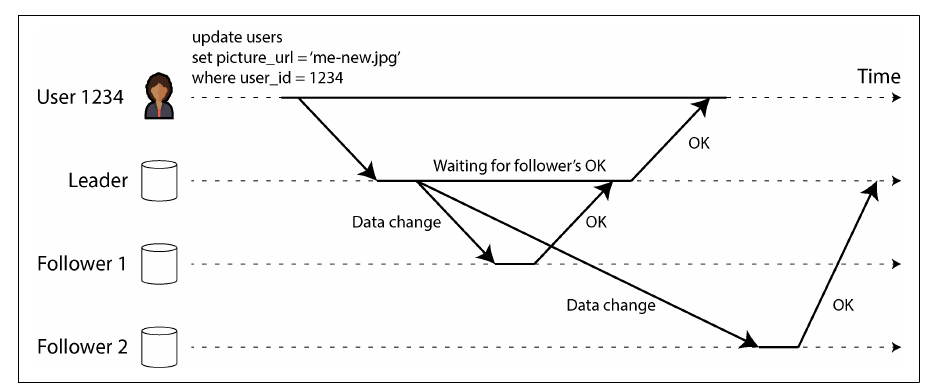
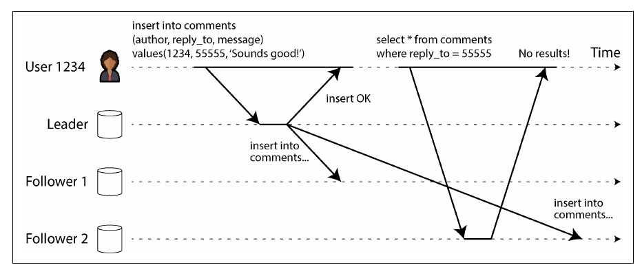
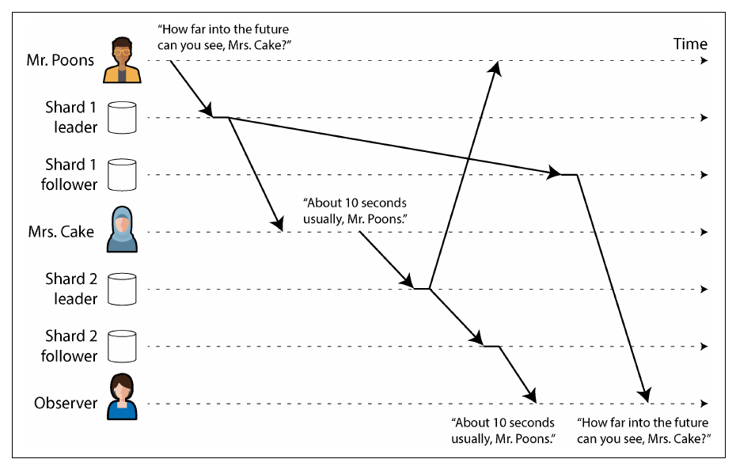
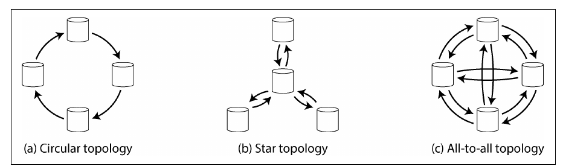
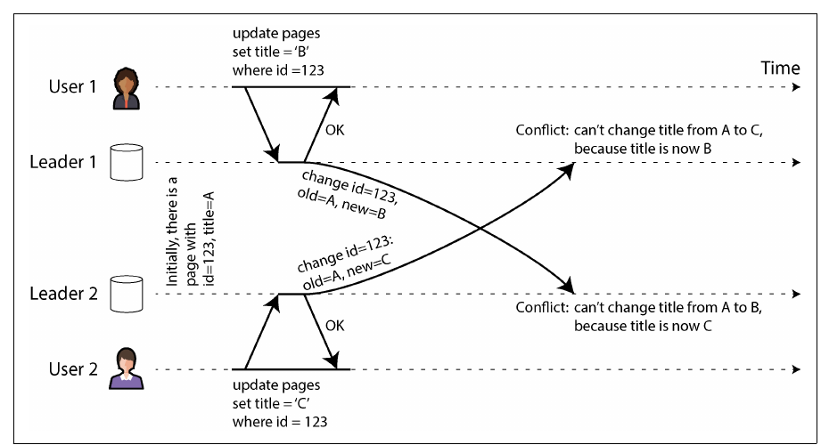
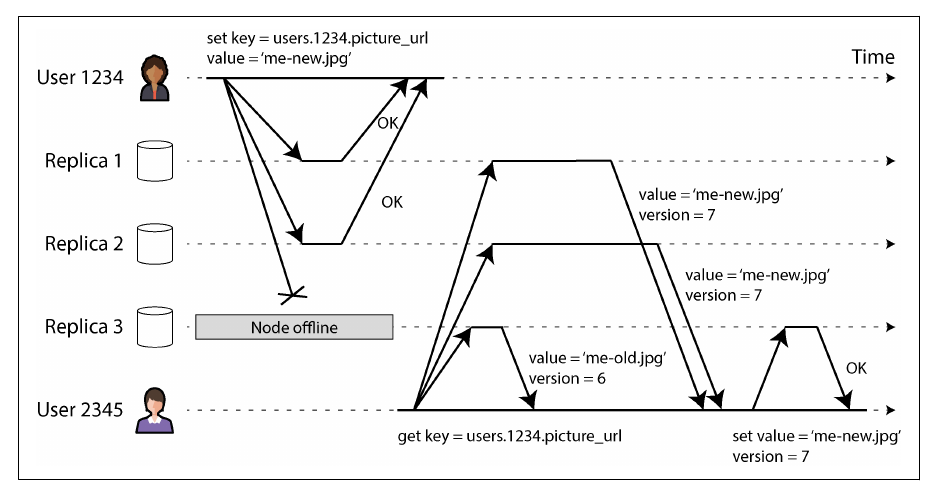
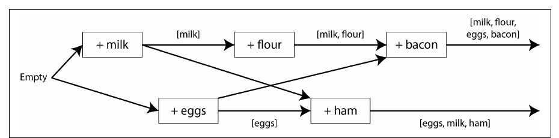

فصل ۶ · صص. ۱۹۷–۲۵۰
مفهوم replication
Replication
Designing Data-Intensive Applications, 2nd Edition
مفهوم replication یعنی نگه داشتن یک کپی از همان داده روی چند ماشین، برای availability، durability، کار بدون اتصال، latency کمتر و مقیاسپذیری خواندن. نگه داشتن کپی وقتی داده عوض نمیشود آسان است؛ همهی سختی در پخش کردن تغییرهاست. فصل سه خانوادهی الگوریتم را مقایسه میکند: single-leader، multi-leader و leaderless؛ و در کنارش انتشار synchronous و asynchronous، failover، ناهنجاریهایی که replication lag میسازد و تضمینهای consistency که درمانشان میکنند، sync engineهای local-first، و اینکه نوشتنهای concurrent چطور تشخیص داده میشوند، با version vector، و چطور حل میشوند، با last write wins، حل دستی یا CRDT.
فهرست خود فصل (از فهرست مطالب کتاب)
- مفهوم single-leader replication (ص. ۱۹۸)
- مقایسهی replication از نوع synchronous و asynchronous (ص. ۲۰۰)
- راهاندازی follower تازه (ص. ۲۰۱)
- مدیریت از کار افتادن node (ص. ۲۰۴)
- پیادهسازی replication log (ص. ۲۰۶)
- مشکلهای replication lag (ص. ۲۰۹)
- راهحلهای replication lag (ص. ۲۱۴)
- مفهوم multi-leader replication (ص. ۲۱۵)
- کار در چند منطقهی جغرافیایی (ص. ۲۱۶)
- مفهوم sync engine و نرمافزار local-first (ص. ۲۲۰)
- برخورد با نوشتنهای متعارض (ص. ۲۲۲)
- مفهوم leaderless replication (ص. ۲۲۹)
- نوشتن در دیتابیس وقتی یک node خاموش است (ص. ۲۲۹)
- مقایسهی کارایی single-leader و leaderless (ص. ۲۳۵)
- کار در چند region (ص. ۲۳۶)
- تشخیص نوشتنهای concurrent (ص. ۲۳۷)
- جمعبندی (ص. ۲۴۳)
از کتاب
مقدمه
مفهوم replication یعنی نگه داشتن کپی همان داده روی چند ماشین که با شبکه به هم وصلاند: تا داده نزدیک کاربر باشد، یعنی latency؛ تا وقتی بخشی خراب میشود کار ادامه پیدا کند، یعنی availability و durability؛ و تا خواندنهای بیشتری سرویس داده شود، یعنی throughput. این فصل فرض میکند هر node کل داده را دارد؛ فصل ۷ آن را shard میکند. همهی سختی در *تغییرها*ست و تقریباً هر دیتابیس توزیعشده از یکی از سه خانواده استفاده میکند: single-leader، multi-leader و leaderless (صص. ۱۹۷–۱۹۸).
هنوز به backup نیاز دارید (ص. ۱۹۸): replicaها یک حذف اشتباهی را در چند لحظه پخش میکنند؛ backup اجازه میدهد به گذشته برگردید. این دو مکمل هماند: snapshotها replicaهای تازه را راه میاندازند و replication logهای آرشیوشده بخشی از backup میشوند.
warehouse در reference stack دو replica دارد و Bronze خام همهی ردیفهای منبع را نگه میدارد.
?نوبت شما · کسی با یک DELETE اشتباه نیمی از یک جدول Silver را پاک میکند. replica دوم warehouse کمکی میکند؟ چه چیزی جدول را برمیگرداند؟دیدن پاسخ
نه؛ حذف در چند لحظه به replica دوم هم میرسد، چون replication جای backup را نمیگیرد (ص. ۱۹۸). در این stack لایهی Bronze نقش تاریخچه را دارد: Silver را میشود با اجرای دوبارهی همان SQL از Bronze ساخت. برای Bronze خودش، که از هیچ چیز دیگری ساخته نمیشود، backup واقعی لازم است.
امتحان کنید
فصل ۶ در طول یک pipeline داده
باز کردن در صفحهی کامل ↗ · این شبیهسازی مدل خود vault از سازوکاری است که کتاب شرح میدهد.
از کتاب
مفهوم single-leader replication
به آن leader-based، primary-backup یا active/passive هم میگویند (صص. ۱۹۸–۱۹۹):
- یک replica leader است، یا primary یا source؛ همهی نوشتنها به آن میروند و آنها را محلی مینویسد.
- هر تغییر را در یک replication log، یا change stream، برای followerها میفرستد، که read replica، secondary یا hot standby هم نام دارند؛ آنها تغییرها را با همان ترتیب اعمال میکنند.
- خواندن از هر replicaای ممکن است؛ فقط leader نوشتن میپذیرد.
با sharding هر shard leader خودش را دارد. این مدل را PostgreSQL، MySQL، Oracle Data Guard، SQL Server Always On، MongoDB، DynamoDB، Kafka و DRBD به کار میبرند، و سیستمهای consensus مثل Raft هم، یعنی CockroachDB، TiDB، etcd و quorum queueهای RabbitMQ. اصطلاح «master–slave» قدیمی و توهینآمیز است (صص. ۱۹۹–۲۰۰).
مفهوم single-leader replication
مقایسهی replication از نوع synchronous و asynchronous
صص. ۲۰۰–۲۰۱| حالت | leader منتظر چه کسی میماند | سود | هزینه |
|---|---|---|---|
| synchronous برای همهی followerها | همهی followerها | همهی followerها بهروزند | یک node کند یا مرده همهی نوشتنها را متوقف میکند؛ عملی نیست |
| مدل semi-synchronous | یک follower، و اگر عقب بیفتد یکی دیگر جایش میآید | دستکم دو کپی بهروز | کمی latency |
| quorum اکثریت، مثلاً ۳ از ۵ | اکثریت | پایهی سیستمهای consensus در فصل ۱۰ | latency نود میانه |
| کاملاً asynchronous | هیچ followerی | leader حتی اگر همهی followerها عقب باشند ادامه میدهد؛ با followerهای زیاد یا دور رایج است | اگر leader بمیرد نوشتن تأییدشده ممکن است گم شود |


مفهوم latency replication معمولاً زیر یک ثانیه است، اما followerها ممکن است چند دقیقه عقب بیفتند: هنگام بازیابی، نزدیک ظرفیت یا با مشکل شبکه (صص. ۲۰۰–۲۰۱).
مفهوم single-leader replication
راهاندازی follower تازه
صص. ۲۰۱–۲۰۳- یک snapshot سازگار از leader بگیرید، بدون قفل کردنش؛ قابلیت داخلی دیتابیس یا ابزارهایی مثل Percona XtraBackup.
- آن را به node تازه کپی کنید.
- همهی تغییرها از موقعیت دقیق snapshot در log را درخواست کنید: log sequence number در PostgreSQL، و مختصات binlog یا GTID در MySQL.
- وقتی عقبماندگی پردازش شد، follower به leader رسیده است.
آرشیو کردن snapshotها و replication log در یک object store، با WAL-G برای PostgreSQL و MySQL و SQL Server یا Litestream برای SQLite، backup، بازیابی از فاجعه و قدمهای ۱ و ۲ را مجانی میدهد (ص. ۲۰۲).
دیتابیسهایی که روی object storage ساخته شدهاند (صص. ۲۰۲–۲۰۳):
| مزیتها | بدهبستانها |
|---|---|
| ارزان؛ working set در حافظه یا SSD و دادهی سرد روی object storage | latency خواندن و نوشتن خیلی بیشتر از دیسک محلی یا EBS |
| durability در چند zone یا region، بدون هزینهی ترافیک بین zoneها | هزینهی هر درخواست مجبورتان میکند batch کنید، یعنی latency بیشتر |
| نوشتن شرطی، یعنی compare-and-set، برای تراکنش و انتخاب leader | objectهای immutable نوشتن تصادفی را گران میکنند |
| یک store برای سیستمهای زیاد یکپارچهسازی را آسان میکند، مثل Parquet و Iceberg | interface استاندارد filesystem ندارد؛ mountهای FUSE قابلیتهای POSIX را ندارند |
طراحیها از tiered storage شروع میشوند، به object storage به عنوان storage اصلی با یک WAL کمlatency میرسند، مثل EBS یا Safekeepers در Neon، و تا معماری zero-disk پیش میروند که دیسک فقط cache است: WarpStream، Confluent Freight، Bufstream، Redpanda Serverless، بیشتر warehouseهای cloud، Turbopuffer و SlateDB (ص. ۲۰۳).
مفهوم single-leader replication
مدیریت از کار افتادن node
صص. ۲۰۴–۲۰۶خرابی follower و بازیابی با catch-up: follower آخرین تغییری را که پردازش کرده میداند و همهی تغییرهای بعد از آن را میخواهد. رسیدن دوباره بعد از یک قطعی طولانی به هر دو node فشار میآورد، و leader یا باید log را نگه دارد، با خطر پر شدن دیسک، یا پاکش کند و follower را مجبور به بازیابی از backup کند (ص. ۲۰۴).
خرابی leader و failover، دستی یا خودکار (صص. ۲۰۴–۲۰۵):
flowchart LR
D["1 · Detect failure<br/>(usually a timeout, e.g. 30 s)"] --> C["2 · Choose a new leader<br/>(election by majority, or a controller;<br/>most up-to-date replica)"] --> R["3 · Reconfigure<br/>(clients write to the new leader;<br/>old leader must step down)"]چه چیزهایی خراب میشود (صص. ۲۰۵–۲۰۶):
- با replication از نوع asynchronous ممکن است leader تازه آخرین نوشتنهای leader قدیم را نداشته باشد؛ معمولاً دور ریخته میشوند، یعنی نوشتنهای «commitشده» durable نبودند.
- دور ریختن وقتی سیستمهای دیگر آن نوشتنها را دیدهاند خطرناک است: در GitHub یک follower عقبماندهی MySQL به leader تبدیل شد و کلیدهای autoincrementی را دوباره به کار برد که پیشتر در Redis استفاده شده بودند، و دادهی خصوصی به دست کاربرهای اشتباه رسید.
- پدیدهی split brain: دو node هر دو خودشان را leader میدانند؛ سازوکارهای خام خاموشکردن ممکن است هر دو را بکشند یا دیر عمل کنند. محافظت در برابرش fencing است، در فصل ۹.
- مقدار timeout: اگر خیلی طولانی باشد بازیابی کند است؛ اگر خیلی کوتاه، failoverهای بیدلیل در اوج بار وضع را بدتر میکنند. بعضی تیمها failover دستی را ترجیح میدهند.
همیشه بهروزترین follower را ارتقا بدهید: follower synchronous یا آن که بالاترین log sequence number را دارد (ص. ۲۰۶).
دیتابیس منبع A در reference stack یک replica read-only از دیتابیس اصلی محصول است. اگر دیتابیس اصلی failover کند و follower تازه آخرین نوشتنها را نداشته باشد، آن نوشتنها دور ریخته میشوند.
?نوبت شما · بعد از یک failover در دیتابیس اصلی، چند پرداخت که loader ساعت پیش در Bronze نوشته دیگر در منبع نیستند و شناسههایشان به پرداختهای تازه داده شده. چرا، و این برای Silver چه معنایی دارد؟دیدن پاسخ
leader قدیم آن نوشتنها را تأیید کرده بود، اما پیش از replicate شدن مرد؛ leader تازه آنها را نداشت و شمارندهی autoincrement را از عقبتر ادامه داد، مثل ماجرای GitHub (صص. ۲۰۵–۲۰۶). حالا Bronze دو نسخه با یک id دارد که دو پرداخت متفاوتاند، و dedup در Silver بر اساس id یکی را بیصدا دور میریزد. یک بررسی reconciliation با منبع باید این را بگیرد.
مفهوم single-leader replication
پیادهسازی replication log
صص. ۲۰۶–۲۰۸| روش | چه چیزی فرستاده میشود | مشکلها و کاربردها |
|---|---|---|
| مدل statement-based | هر دستور INSERT، UPDATE و DELETE | تابعهای nondeterministic مثل NOW و RAND، autoincrement یا دستورهای وابسته به داده که ترتیب یکسان لازم دارند، و اثر جانبی trigger و procedure. راهحل: گذاشتن مقدارهای ثابت به جای آنها، یعنی state machine replication. در MySQL پیش از ۵.۱؛ VoltDB تراکنشهای deterministic لازم دارد |
| ارسال write-ahead log | همان WAL خود storage engine: کدام بایتها در کدام بلوکها عوض شدند | در PostgreSQL و Oracle. به قالب storage بسته است: leader و followerها معمولاً نمیتوانند نسخههای متفاوت اجرا کنند، پس ارتقا downtime لازم دارد |
| لاگ logical یا row-based | برای هر ردیف: insert با همهی مقدارها، delete با کلید، update با کلید و مقدارهای تازه، و بعد یک رکورد commit | از storage جداست، پس نسخههای مختلف کنار هم و ارتقای تقریباً بدون downtime ممکن است؛ سیستمهای بیرونی هم میتوانند بخوانندش، یعنی change data capture. binlog در MySQL؛ PostgreSQL WAL خودش را logical decode میکند |
ارتقای بدون downtime یعنی followerها را ارتقا بدهید و بعد به یکی از آنها failover کنید؛ فقط وقتی ممکن است که پروتکل اختلاف نسخه را تحمل کند (صص. ۲۰۷–۲۰۸).
loader در reference stack هیچ replication logی نمیخواند؛ هر ساعت ردیفهایی را میگیرد که update_date آنها جلو رفته. برای همین hard deleteها در منبع برایش نامرئیاند.
?نوبت شما · کدام روش replication log کتاب این مشکل را حل میکند و چرا؟دیدن پاسخ
لاگ logical یا row-based، یعنی change data capture: برای هر ردیف حذفشده یک رکورد delete با کلیدش دارد، و سیستمهای بیرونی میتوانند parseاش کنند (صص. ۲۰۷–۲۰۸). cursor روی update_date فقط وضع فعلی ردیفهای باقیمانده را میبیند، نه رویداد حذف را.
از کتاب
مشکلهای replication lag
بارهای کاری که بیشترشان خواندن است وسوسهتان میکنند followerهای زیاد اضافه کنید و خواندنها را پخش کنید، یعنی read scaling، که فقط با replication از نوع asynchronous کار میکند؛ synchronous برای همه یعنی هر خرابی تکی نوشتنها را متوقف میکند. آن وقت خوانندهها ممکن است دادهی کهنه ببینند: eventual consistency، اصطلاحی که Terry و همکارانش ساختند و Werner Vogels رایجش کرد. «بالاخره» هیچ حد مشخصی ندارد: معمولاً کسری از ثانیه replication lag است، اما نزدیک ظرفیت یا هنگام مشکل شبکه چند ثانیه یا چند دقیقه (ص. ۲۰۹).
| ناهنجاری | تضمین | روشها (صص. ۲۱۰–۲۱۴) |
|---|---|---|
| نوشتن خودتان را نمیبینید؛ شکل ۶-۳ | مدل read-after-write، یا read-your-writes: بهروزرسانیهای خودتان را همیشه میبینید؛ دربارهی دیگران قولی نیست | چیزهایی را که کاربر میتواند ویرایش کند از leader بخوانید، مثلاً پروفایل خودش از leader و پروفایل دیگران از followerها؛ تا یک دقیقه بعد از هر نوشتن از leader بخوانید، یا از followerهایی که بیش از یک دقیقه عقباند نخوانید؛ timestamp آخرین نوشتن کاربر را نگه دارید، logical مثل LSN یا بر اساس ساعت، و فقط از replicaهایی بخوانید که دستکم همانقدر تازهاند |
| داده ظاهر میشود و با refresh ناپدید؛ شکل ۶-۴ | مدل monotonic reads: برگشت به گذشته ممنوع؛ قویتر از eventual و ضعیفتر از strong consistency | هر کاربر از یک replica بخواند که با hash شناسهی کاربر انتخاب میشود و اگر خراب شد جایش عوض میشود |
| جواب پیش از سؤال ظاهر میشود: خانم Cake به آقای Poons جواب میدهد؛ شکل ۶-۵ | مدل consistent prefix reads: نوشتنها با همان ترتیبی دیده میشوند که اتفاق افتادهاند | دادههای علّی مرتبط را در یک shard بنویسید، یا وابستگیهای علّی را دنبال کنید |




مدل read-after-write بین دستگاهها به metadata متمرکز «آخرین نوشتن» نیاز دارد، و دستگاههای مختلف، مثلاً اینترنت خانگی و شبکهی موبایل، ممکن است به regionهای مختلف برسند. هر region مجموعهای از availability zoneهاست، یعنی datacenterهای جدا با برق و سرمایش خودشان که با شبکهی سریع به هم وصلاند. چند zone از یک قطعی zone جان سالم به در میبرد؛ برای قطعی کل region چند region لازم است، با latency و هزینهی بیشتر (صص. ۲۱۱–۲۱۲).
راهحلها (صص. ۲۱۴–۲۱۵): بپرسید اگر lag به چند دقیقه یا چند ساعت برسد اپلیکیشن چه رفتاری دارد؛ وانمود نکنید replication از نوع asynchronous همان synchronous است. راهحلهای سطح اپلیکیشن پیچیدهاند؛ سادهترین مدل دیتابیسی است با linearizability، در فصل ۱۰، و تراکنشهای ACID، در فصل ۸. دنیای NoSQL میگفت اینها scale نمیشوند؛ دیتابیسهای NewSQL حالا آنها را به شکل توزیعشده میدهند؛ با این حال مدلهای ضعیفتر به خاطر تحمل قطعی شبکه و سربار کمتر هنوز جذاباند.
کوئریها از طریق یک SQL proxy به هر کدام از دو replica در warehouse میرسند، و یک insert ممکن است چند لحظه بعد به replica دیگر برسد.
?نوبت شما · یک تحلیلگر ردیفهایی را در یک جدول موقت insert میکند و کوئری بعدیاش جدول را خالی نشان میدهد؛ با refresh ردیفها میآیند و با refresh بعدی دوباره میروند. این دو ناهنجاری کداماند و درمان کتاب چیست؟دیدن پاسخ
اول نقض read-after-write است، چون نوشتن خودش را نمیبیند؛ بعد نقض monotonic reads، چون بین یک replica تازه و یک replica عقبمانده جابهجا میشود (صص. ۲۱۰–۲۱۳). درمان کتاب این است که هر کاربر همیشه از یک replica بخواند، مثلاً با hash شناسهی کاربر، یا فقط از replicaای که دستکم تا آخرین نوشتن او رسیده.
loader در شب، همزمان با batchهای سنگین دیتابیس اصلی، از replica منبع میخواند.
?نوبت شما · داشبورد پرداختهای دیروز ساعت یک بامداد ناقص است و صبح کامل. چطور میشود فهمید تقصیر replication lag است؟دیدن پاسخ
در سیستمهای leader-based lag را میشود اندازه گرفت: اختلاف موقعیت log بین leader و replica (صص. ۲۳۴–۲۳۵). اگر این عدد را کنار زمان هر load ثبت کنید، معلوم میشود loader از replicaای خوانده که چند دقیقه یا چند ساعت عقب بوده؛ بررسی freshness باید به این عدد نگاه کند، نه فقط به زمان اجرای load.
امتحان کنید
مفهوم replication lag و quorum
باز کردن در صفحهی کامل ↗ · این شبیهسازی مدل خود vault از سازوکاری است که کتاب شرح میدهد.
از کتاب
مفهوم multi-leader replication
چند node نوشتن میپذیرند و هر کدام follower بقیه هم هستند، یعنی active/active یا دوطرفه. multi-leader از نوع synchronous در عمل همان single-leader است، پس کتاب روی asynchronous تمرکز میکند: هر leader حتی وقتی ارتباطش قطع شده نوشتن میپذیرد (صص. ۲۱۵–۲۱۶).
مفهوم multi-leader replication
کار در چند منطقهی جغرافیایی
صص. ۲۱۶–۲۲۰یک leader در هر region، شکل ۶-۶، با replication معمولی leader و follower داخل هر region (صص. ۲۱۶–۲۱۷):
| یک leader برای همهی regionها | مدل multi-leader، یک leader در هر region | |
|---|---|---|
| latency نوشتن | هر نوشتن از اینترنت تا region مربوط به leader میرود | محلی؛ asynchronous replicate میشود و latencyش از کاربر پنهان است |
| قطعی یک region | failover به followerی در جای دیگر | هر region کار میکند و بعداً عقبماندگی را جبران میکند |
| مشکل شبکه بین regionها | خیلی حساس؛ نوشتنها منتظر لینک میمانند | تحمل میشود |
| مفهوم consistency | میتواند تراکنش serializable بدهد | خیلی ضعیفتر: نمیتواند تضمین کند موجودی منفی نشود یا یک username یکتا باشد |
این مدل را MySQL، Oracle، SQL Server و YugabyteDB پشتیبانی میکنند، و افزونههایی مثل Redis Enterprise، EDB Postgres Distributed و pglogical. اغلب بعداً به سیستم اضافه شده، پس کلیدهای autoincrement، triggerها و integrity constraintها بد رفتار میکنند؛ کتاب آن را «قلمرو خطرناک» مینامد (صص. ۲۱۷–۲۱۸).
توپولوژیها (شکل ۶-۷):


در توپولوژی دایرهای و ستارهای نوشتنها از nodeهای دیگر عبور داده میشوند و با شناسهی nodeهایی که از آنها گذشتهاند علامت میخورند تا حلقه پیش نیاید؛ و یک node خراب ممکن است جریان را متوقف کند. all-to-all fault toleranceی بیشتری دارد، اما پیامها ممکن است از هم سبقت بگیرند: leader ۲ ممکن است update از B را پیش از insert از A برای همان ردیف بگیرد؛ شکل ۶-۸. timestamp این را حل نمیکند؛ version vector حل میکند؛ با این حال خیلی از سیستمها از آن استفاده نمیکنند، پس آنچه را که به آن تکیه دارید تست کنید (صص. ۲۱۸–۲۲۰).
مفهوم multi-leader replication
مفهوم sync engine و نرمافزار local-first
صص. ۲۲۰–۲۲۲تقویمهای آفلاین و اپهای همکاری، مثل Google Docs و Sheets، Figma و Linear، همان multi-leader در حد افراطاند: هر دستگاه یا tab مرورگر یک replica-leader است و lag ممکن است چند ساعت یا چند روز باشد. یک sync engine تغییرهای محلی را میگیرد، میفرستد یا در صف میگذارد، تغییرهای راه دور را merge میکند و UI را بهروز میکند. اپهای offline-first بدون اینترنت کار میکنند؛ اپهای local-first حتی اگر شرکت سازنده تعطیل شود کار میکنند، مثلاً با یک پروتکل sync باز؛ Git یک ابزار local-first است، بدون همکاری real-time (صص. ۲۲۰–۲۲۱).
| مزیتها (صص. ۲۲۱–۲۲۲) | محدودیتها |
|---|---|
| دادهی محلی یعنی UI میتواند در یک frame پاسخ بدهد، یعنی ۱۶ میلیثانیه در ۶۰ هرتز | وقتی بهترین کار را میکند که همهی دادهای که کاربر لازم دارد از پیش دانلود شود؛ برای فایلهای خود کاربر خوب است، برای کل کاتالوگ یک فروشگاه نه |
| آفلاین بودن حالت خاصی نیست؛ فقط یک latency شبکهی خیلی بزرگ است | ویرایشهای همزمان conflict را اجتنابناپذیر میکنند |
| خواندن و نوشتن محلی تقریباً هیچوقت شکست نمیخورد، پس برنامهنویسی declarative ممکن میشود | |
| بهروزرسانی real-time با برنامهنویسی reactive |
پیشگامش Lotus Notes در دههی ۱۹۸۰ بود؛ امروز Firestore، Realm و Ditto با backend اختصاصی، و PouchDB و CouchDB، Automerge و Yjs به شکل باز. بازیها به آن netcode میگویند (ص. ۲۲۲).
مفهوم multi-leader replication
برخورد با نوشتنهای متعارض
صص. ۲۲۲–۲۲۹دو کاربر عنوان یک صفحهی ویکی را روی دو leader مختلف عوض میکنند، یکی از A به B و دیگری از A به C؛ شکل ۶-۹. این نوشتنها concurrent هستند چون هیچکدام از دیگری خبر نداشت، نه به خاطر زمان ساعت دیواری.


| راهبرد | چطور | گیرش |
|---|---|---|
| پرهیز از conflict | همهی نوشتنهای یک رکورد را به یک leader بفرستید، مثلاً region «خانه»ی کاربر؛ یا بازهی id زوج و فرد برای دو leader | وقتی leader تعیینشده عوض شود میشکند؛ برای clientهای آفلاین ناممکن است |
| مدل last write wins یا LWW | بزرگترین timestamp را نگه دارید و در تساوی مقدارها را مقایسه کنید | در واقع یعنی برنده را تصادفی انتخاب کنید و بقیه را بیصدا دور بریزید؛ clock skew ممکن است نوشتن دیرتر را بازنده کند. فقط وقتی خوب است که هر کلید یک بار نوشته شود |
| حل دستی | همهی مقدارها را به شکل sibling نگه دارید، مثل CouchDB، و در کد اپلیکیشن یا با کمک کاربر حلشان کنید | API مجموعه برمیگرداند؛ UI حل conflict سخت است؛ mergeهای ساده غافلگیر میکنند: سبد خرید Amazon آیتمهای حذفشده را برمیگرداند، شکل ۶-۱۰؛ حلهای همزمان ممکن است دوباره conflict بسازند، مثل B/C در برابر C/B |
| حل خودکار | الگوریتم merge برای هر نوع داده، یعنی strong eventual consistency | نمیتواند همهچیز را اجرا کند؛ مثلاً «حداکثر پنج آیتم» یعنی باید بعضی را دور ریخت |
همهی mergeهای خودکار یا mergeها (صص. ۲۲۶–۲۲۷): متن همهی درجها و حذفها را نگه میدارد و برای درجهای هممکان یک ترتیب deterministic دارد؛ collectionها هم درج و هم حذف را ثبت میکنند، پس سبد خرید {Soap} میشود؛ counterها افزایشها و کاهشها را بدون دو بار شمردن جمع میکنند؛ mapها برای هر کلید merge میکنند.
مقایسهی CRDT و operational transformation: هر دو ice را با nice و ice! به nice! merge میکنند؛ شکل ۶-۱۱:
| مدل operational transformation یا OT | مدل CRDT | |
|---|---|---|
| موقعیتها | با index: n را در ۰ و ! را در ۳ درج کن | شناسهی یکتا و immutable برای هر کاراکتر: ! با شناسهی 4B را بعد از e با شناسهی 3A درج کن |
| merge کردن | indexهای عملیاتهای همزمان را تبدیل میکند؛ ! به ۴ میرود | تبدیلی لازم نیست؛ درجهای هممکان با شناسه مرتب میشوند |
| کاربرد رایج | ویرایش real-time متن؛ Google Docs و ShareDB | دیتابیسها؛ Redis Enterprise، Riak و Cosmos DB، و Automerge و Yjs |
انواع conflict (صص. ۲۲۸–۲۲۹): conflictهای آشکار، مثل یک فیلد، و conflictهای ظریف، مثل دو رزرو اتاق جلسه برای یک بازه که هر کدام بعد از بررسی خالی بودن یک رکورد تازه درج میکنند. فصلهای ۸ و ۱۳ به این برمیگردند.
جدول Silver در reference stack برای هر id «جدیدترین نسخه» را بر اساس update_date نگه میدارد. این همان last write wins است.
?نوبت شما · دو نسخه از یک ردیف با update_date یکسان تا ثانیه در Bronze هست. کدام برنده میشود، و چه چیزی بیصدا از دست میرود؟دیدن پاسخ
بدون یک قاعدهی شکستن تساوی، برنده عملاً تصادفی است و نسخهی دیگر بیصدا دور ریخته میشود، همان ضعف LWW (صص. ۲۲۲–۲۲۹). قاعدهای deterministic اضافه کنید، مثلاً زمان load یا موقعیت در فایل، و تعداد تساویها را بشمارید؛ اگر ساعت منبع عقب و جلو برود، حتی نسخهی واقعاً دیرتر هم ممکن است ببازد.
از کتاب
مفهوم leaderless replication
هر replica نوشتن را مستقیم از client میپذیرد، یا از طریق یک coordinator که هیچ ترتیبی تحمیل نمیکند. سیستمهای اولیه leaderless بودند؛ Dynamo در Amazon در سال ۲۰۰۷ این ایده را برای Riak، Cassandra و ScyllaDB زنده کرد، که به آنها «Dynamo-style» میگویند. DynamoDB، برخلاف اسمش، single-leader و روی Multi-Paxos است (ص. ۲۲۹).
مفهوم leaderless replication
نوشتن در دیتابیس وقتی یک node خاموش است
صص. ۲۲۹–۲۳۱با سه replica و یکی خاموش، client به هر سه مینویسد و وقتی دو تا تأیید کنند موفق است؛ خواندن هم به چند replica میرود و شمارهی نسخه جدیدترین پاسخ را انتخاب میکند؛ شکل ۶-۱۲. failover لازم نیست. نوشتنهای جاافتاده اینطور جبران میشوند:


| سازوکار | چطور | چه چیزی را پوشش میدهد |
|---|---|---|
| مفهوم read repair | خوانندهای که v6 را روی یک replica و v7 را روی بقیه میبیند، v7 را برمیگرداند و مینویسد | مقدارهایی که زیاد خوانده میشوند |
| مفهوم hinted handoff | replica دیگری برای node خاموش hint نگه میدارد و وقتی برگشت برایش میفرستد | مقدارهایی که هیچوقت خوانده نمیشوند |
| مفهوم anti-entropy | مقایسه و کپی در پسزمینه، بدون ترتیب خاص و شاید با latency طولانی | همهچیز، بالاخره |
مفهوم leaderless replication
مفهوم quorum برای خواندن و نوشتن
صص. ۲۳۱–۲۳۵با n replica، هر نوشتن w تأیید لازم دارد و هر خواندن از r replica میپرسد. اگر w + r > n باشد، مجموعهی خواندن و مجموعهی نوشتن همپوشانی دارند، پس دستکم یکی از replicaهای خواندهشده آخرین نوشتن را دارد؛ شکل ۶-۱۳. درخواستها همیشه به هر n replica میروند؛ w و r میگویند منتظر چند تا بمانیم.
| تنظیم | چه چیزی را تحمل میکند | نکته |
|---|---|---|
n = 3, w = 2, r = 2 | یک node از دسترس خارج | رایج: n فرد و w = r = (n + 1)/2 |
n = 5, w = 3, r = 3 | دو node از دسترس خارج | |
w = n, r = 1 | برای نوشتن هیچ خرابی node را تحمل نمیکند | خواندن سریع برای بارهای پرخواندن و کمنوشتن |
w + r ≤ n | خرابیهای بیشتر، latency کمتر | خواندنهای کهنهی بیشتر |
مفهوم quorumها لازم نیست اکثریت باشند؛ فقط همپوشانی مهم است (ص. ۲۳۳). حالتهای مرزی که حتی با w + r > n مقدار کهنه برمیگرداند (صص. ۲۳۳–۲۳۴): nodeی که مقدار تازه دارد از یک replica کهنه بازیابی میشود؛ rebalancing جای n کپی را عوض میکند؛ خواندنی همزمان با یک نوشتن؛ نوشتنی که روی کمتر از w replica موفق شد rollback نمیشود؛ LWW با clock skew، در Cassandra و ScyllaDB، نوشتنها را بیصدا میاندازد؛ و نوشتنهای همزمان با ترتیبهای متفاوت اعمال میشوند. سیستمهای Dynamo-style برای eventual consistency ساخته شدهاند؛ w و r را تنظیم احتمال کهنگی بدانید.
مفهوم monitoring کهنگی (صص. ۲۳۴–۲۳۵): سیستمهای leader-based مقدار lag را به شکل اختلاف موقعیت در log نشان میدهند؛ سیستمهای leaderless ترتیب نوشتن ثابتی ندارند، پس سخت است؛ تعداد hintها یک نشانهی تقریبی است. «بالاخره» را باید اندازه گرفت.
مفهوم leaderless replication
مقایسهی کارایی single-leader و leaderless
صص. ۲۳۵–۲۳۶| خواندن از leader | مدل leaderless | |
|---|---|---|
| مفهوم consistency | بهروز؛ تضمینهای قوی ممکن است | احتمالاتی |
| مقدار throughput | محدود به یک leader | پخش بین replicaها |
| خرابی یا کندی | منتظر تشخیص و failover بمانید؛ leader کند همه را کند میکند | failover ندارد؛ از سریعترین پاسخها استفاده میکند؛ request hedging tail latency را کم میکند؛ با gray failure، یعنی nodeهای نیمهخراب، آرام کنار میآید |
| هزینهها | ندارد | hinted handoff وقتی سیستم زیر فشار است بار اضافه میکند؛ quorumهای بزرگتر منتظر replicaهای بیشتری میمانند، بهندرت بیش از ۴ از ۷ یا ۵ از ۹؛ یک partition بزرگ ممکن است جلوی هر quorumی را بگیرد؛ sloppy quorum در Riak و Dynamo، یا سطح consistency از نوع ANY در Cassandra و ScyllaDB، نوشتن را هر جایی میپذیرد، بدون هیچ تضمینی برای خواندن |
مدل multi-leader در برابر قطعی شبکه حتی مقاومتر است، چون با یک leader نزدیک حرف میزنید، اما خواندنها ممکن است هر قدر کهنه باشند؛ quorumها حد وسطاند (ص. ۲۳۶).
کار در چند region (صص. ۲۳۶–۲۳۷): در Cassandra و ScyllaDB، coordinator محلی client یک نوشتن را به همهی replicaهای محلی و به یک replica در هر region دیگر میفرستد، که آن را در region خودش پخش میکند. سطحهای consistency یک quorum سراسری، یک quorum برای هر region یا یک local quorum را انتخاب میکنند، که سریع است و احتمال کهنگیاش بیشتر. Riak مقدار n را داخل یک region نگه میدارد و بین regionها asynchronous و به سبک multi-leader replicate میکند.
از کتاب
تشخیص نوشتنهای concurrent
همهی latencyهای متغیر و خرابیهای جزئی یعنی replicaها نوشتنها را با ترتیبهای متفاوت میگیرند: در شکل ۶-۱۴ node ۱ هیچوقت نوشتن B را نمیگیرد، node ۲ اول A و بعد B را میبیند و node ۳ اول B و بعد A را؛ بازنویسی ساده آنها را برای همیشه ناسازگار میگذارد. replicaها باید همگرا شوند، با LWW در Cassandra و ScyllaDB، با sibling، یا با CRDT در Riak؛ و LWW نمیتواند نوشتنهای concurrent را از نوشتنهای پشت سر هم تشخیص بدهد (صص. ۲۳۷–۲۳۸).
تشخیص نوشتنهای concurrent
رابطهی happens-before
صص. ۲۳۸–۲۳۹رویداد A پیش از B اتفاق میافتد اگر B از A خبر داشته باشد، به آن وابسته باشد یا روی آن ساخته شده باشد؛ update در شکل ۶-۸ روی insert ساخته شده. دو عملیات concurrent هستند اگر هیچکدام پیش از دیگری اتفاق نیفتد؛ زمان فیزیکی بیربط است، همانطور که در نسبیت رویدادهایی که آنقدر از هم دورند که نور نمیتواند به هم وصلشان کند نمیتوانند روی هم اثر بگذارند؛ یک شبکهی کند ممکن است عملیاتهایی را که چند ثانیه از هم فاصله دارند concurrent کند. پس برای هر A و B یکی از این سه برقرار است: A → B، B → A یا A ∥ B؛ و فقط آخری conflict است.
تشخیص نوشتنهای concurrent
ثبت رابطهی happens-before
صص. ۲۳۹–۲۴۲flowchart LR
R[Client reads key] --> S["Server returns all siblings<br/>+ latest version number"]
S --> M["Client merges the siblings<br/>and adds its change"]
M --> W["Write with the version it read"]
W --> O["Server overwrites values ≤ that version,<br/>keeps higher ones as concurrent siblings"]نوشتنی که هیچ نسخهای همراهش نیست با همهچیز concurrent است و هیچ چیز را بازنویسی نمیکند. مثال سبد خرید کتاب، شکل ۶-۱۵: client ۱ شیر را اضافه میکند و نسخهی v1 ساخته میشود؛ client ۲ بیخبر تخممرغ را اضافه میکند و v2 با siblingهای [milk] و [eggs] ساخته میشود؛ client ۱ بر اساس v1 مقدار [milk, flour] را مینویسد و v3 جای [milk] را میگیرد و [eggs] را نگه میدارد؛ client ۲ بر اساس v2 مقدار [eggs, milk, ham] را مینویسد و v4 جای [eggs] را میگیرد؛ client ۱ بر اساس v3 مقدار [milk, flour, eggs, bacon] را مینویسد و v5 ساخته میشود؛ و siblingهای v4 و v5 میمانند. نسخههای قدیمی بالاخره بازنویسی میشوند و هیچ نوشتنی گم نمیشود (صص. ۲۴۰–۲۴۱).


مفهوم version vector (ص. ۲۴۲): وقتی چند replica نوشتن میپذیرند، برای هر replica و هر کلید یک شمارهی نسخه نگه دارید؛ مجموعهی آنها یک version vector است. Riak 2.0 از dotted version vector استفاده میکند و آن را causal context مینامد. این بردار در خواندن به client میرود و در نوشتن برمیگردد، بازنویسی را از نوشتن concurrent جدا میکند و خواندن از یک replica و نوشتن در replica دیگر را بیخطر میکند. vector clock شبیه آن است اما تفاوت ظریفی دارد؛ برای مقایسهی وضعیت replicaها، version vector ساختار درست است.
امتحان کنید
نوشتنهای concurrent: sibling در برابر last write wins
باز کردن در صفحهی کامل ↗ · این شبیهسازی مدل خود vault از سازوکاری است که کتاب شرح میدهد.
مرور
بدهبستانها در یک نگاه
| مدل single-leader | مدل multi-leader | مدل leaderless | |
|---|---|---|---|
| نوشتنها به کجا میروند | یک leader | هر leader | چند replica به شکل موازی |
| مفهوم consistency | قویترین، با خواندن از leader | conflictها باید حل شوند | quorum؛ conflictها حل میشوند |
| availability نوشتن | خرابی leader یعنی failover | هر leader مستقل است | خرابی node را بدون failover تحمل میکند |
| latency در چند region | نوشتنها از regionها عبور میکنند | نوشتنهای محلی | quorumهای محلی |
| خطر اصلی | گم شدن نوشتن در failover ناهمگام؛ split brain | conflict؛ constraintهای شکسته | خواندن کهنه با وجود quorum؛ sibling |
مرور
نکتههای کلیدی
- مفهوم replication جای backup را نمیگیرد: یک حذف اشتباهی بلافاصله replicate میشود؛ backup تاریخچه را نگه میدارد (ص. ۱۹۸).
- مدل synchronous یک follower بهروز را تضمین میکند اما وقتی آن follower خاموش است نوشتنها را متوقف میکند؛ در عمل یک follower synchronous است، یعنی semi-synchronous، یا replication کاملاً asynchronous است، و آن وقت failover ممکن است نوشتنهای تأییدشده را گم کند (صص. ۲۰۰–۲۰۸).
- کار failover پرخطر است: تشخیص خرابی با timeout، انتخاب بهروزترین replica، و پرهیز از split brain (صص. ۲۰۴–۲۰۷).
- پدیدهی replication lag ناهنجاری میسازد و مدلهای consistency درمانش میکنند: read-after-write، monotonic reads و consistent prefix reads (صص. ۲۰۹–۲۱۵).
- مدل multi-leader به کار در چند region و clientهایی که آفلاین کار میکنند میخورد، یعنی sync engine و نرمافزار local-first؛ اما نوشتنهای concurrent با هم conflict پیدا میکنند (صص. ۲۱۵–۲۲۹).
- مدل leaderless به چند replica موازی مینویسد و از چند replica میخواند؛ با quorumهایی که
w + r > nباشند، هر خواندن با آخرین نوشتن همپوشانی دارد، هرچند حالتهای مرزی میمانند (صص. ۲۲۹–۲۳۷). - مفهوم concurrency به دانستن مربوط است، نه به زمان: دو نوشتن concurrent هستند اگر هیچکدام از دیگری خبر نداشته باشد. version vector این را تشخیص میدهد و merge کردن siblingها، مثلاً با CRDT، حلش میکند (صص. ۲۳۷–۲۴۳).
تمرین
خودتان را بسنجید
پرسشها و پاسخها را خود vault از روی یادداشتهای بالا نوشته است؛ پاسخها به صفحههای کتاب ارجاع میدهند.
۱با replication کاملاً asynchronous، چطور نوشتنی که client موفقیتش را دیده ممکن است گم شود؟دیدن پاسخ
leader نوشتن را پیش از اینکه هیچ followerی داشته باشدش تأیید میکند. اگر leader بعد از آن خراب شود و یک follower ارتقا پیدا کند، leader تازه هیچوقت آن نوشتن را نگرفته؛ وقتی leader قدیم برمیگردد، نوشتنهای replicateنشدهاش معمولاً دور ریخته میشوند (صص. ۲۰۰–۲۰۶).
۳چرا کلیدهای autoincrement و قیدهای یکتایی در multi-leader replication مشکلسازند؟دیدن پاسخ
هر leader مستقل نوشتن میپذیرد و فقط بعداً از نوشتنهای بقیه خبردار میشود، پس دو leader ممکن است یک id را بدهند یا یک username را همزمان بپذیرند؛ conflict فقط بعد از موفق شدن هر دو نوشتن کشف میشود (صص. ۲۱۶–۲۲۹).
۴سناریویی بگویید که w + r > n برقرار است و خواندن باز هم مقدار کهنه برمیگرداند.دیدن پاسخ
برای نمونه: نوشتنی روی کمتر از w replica موفق شده و شکستخورده گزارش شده اما rollback نشده؛ nodeی که مقدار تازه را داشت خراب و از یک replica قدیمی بازیابی شده؛ نوشتنهای concurrent که با last write wins و ساعتهای ناهماهنگ حل شدهاند؛ یا خواندنی همزمان با یک نوشتن (صص. ۲۳۲–۲۳۵).
مکمل
فراتر از کتاب
مکمل vault، نه از متن کتاب.
- سازوکارهای pre-vote و leader lease راههای عملی سیستمهای مبتنی بر consensus برای پرهیز از انتخابهای مزاحم و خواندن از leader کهنهاند؛ فصل ۱۰ را ببینید.
- یک راه رایج برای پشتیبانی از حذف در CRDTهای شبیه set این است که حذفها را به شکل tombstone ثبت کنید، یا از observed-remove set استفاده کنید، تا یک افزودن و حذف همزمان بدون زنده شدن دوبارهی آیتم حذفشده merge شوند.
قدمهای بعدی
ادامه بدهید
اجرا کنید
نوشتنهای concurrent و version vector
بخش اول مثال سبد خرید کتاب را، در شکلهای ۶-۱۵ و ۶-۱۶، با الگوریتم تکreplica که کتاب توصیف میکند دوباره اجرا میکند: سرور برای هر کلید نسخه نگه میدارد، هر مقداری را که هنوز بازنویسی نشده به شکل sibling نگه میدارد، و clientها پیش از نوشتن siblingها را merge میکنند. بخش دوم همین را با version vector به دو replica تعمیم میدهد.
cd books/designing-data-intensive-applications/lab/06-version-vectors
python3 cart.pyپیوندها
- اجرا کنید: نوشتنهای concurrent و version vector: مثال سبد خرید کتاب.
- فصلهای مرتبط: فصل ۷: مفهوم sharding، فصل ۹: دردسرهای سیستمهای توزیعشده برای timeout و ساعتها در LWW، و فصل ۱۰: مفهوم consistency و consensus برای linearizability و failover خودکار درست.